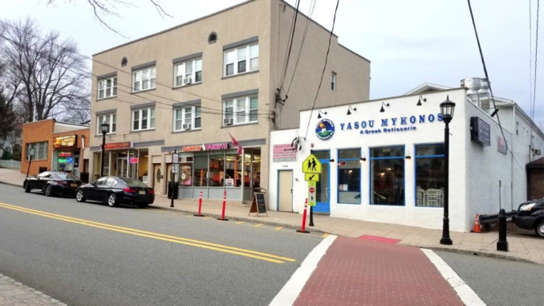

About Me
My name is Ryan Berger.
I am a student at the University of Michigan's School of Information on the Information Analysis pathway. I am also planning on applying to become a graduate student through the School of Information!

I am from Demarest, New Jersey, which is a very small suburban town located right outside New York City. It is so small that the landmarks of the town are the local deli and the Dunkin' Donuts!
My hobbies include hanging out with friends, watching TV, playing tennis, working out, and playing video games.
One of my favorite shows of all time is "It's Always Sunny in Philidelphia"